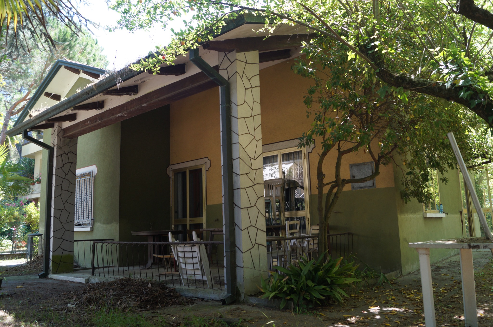
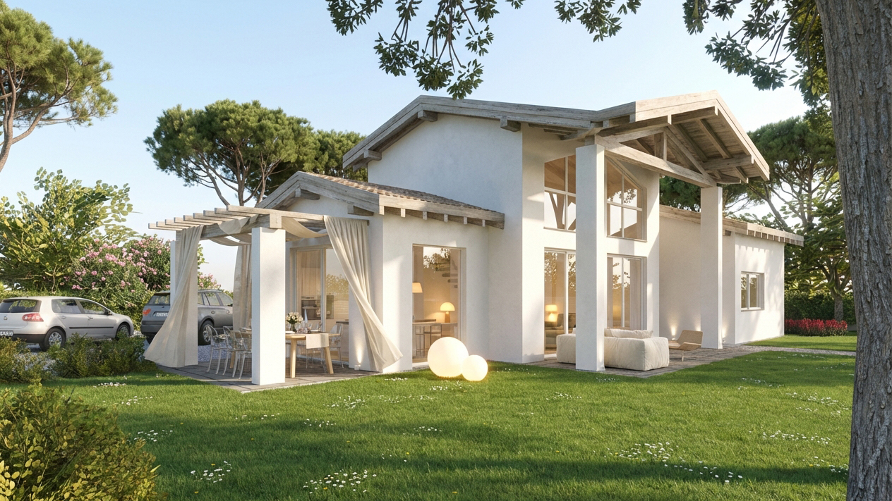
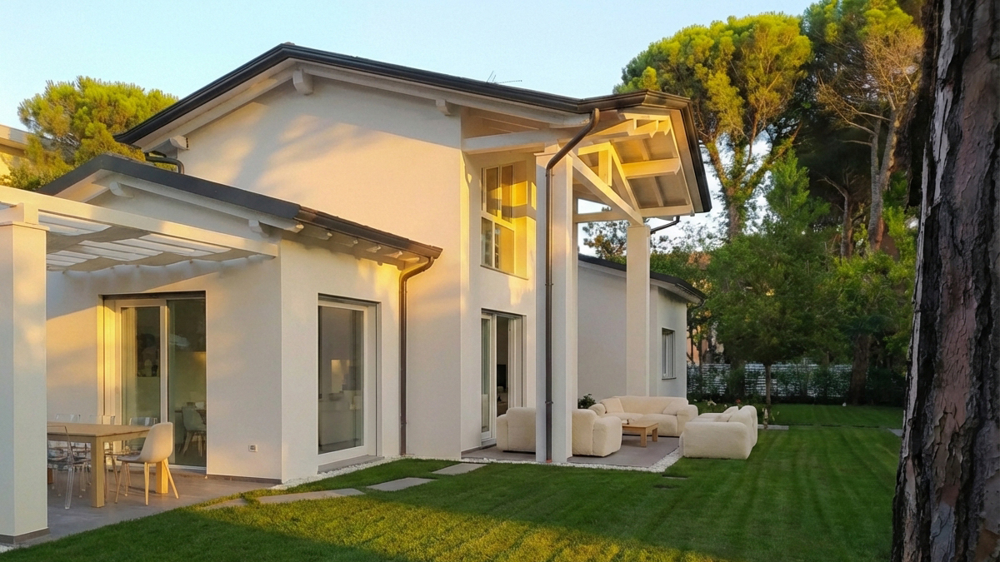
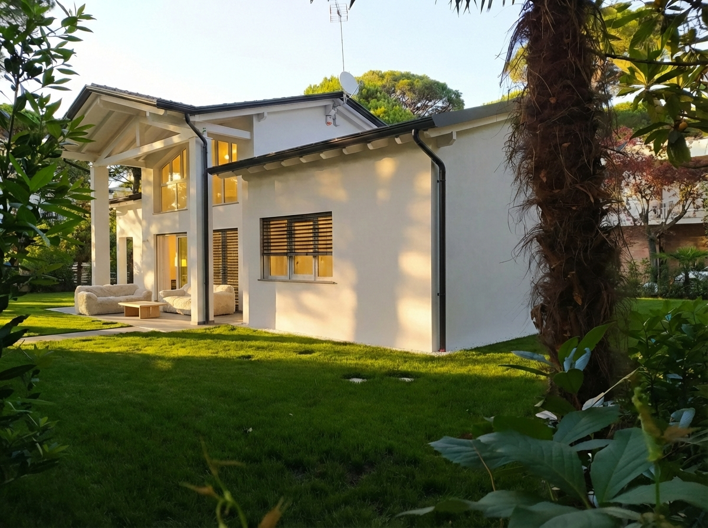
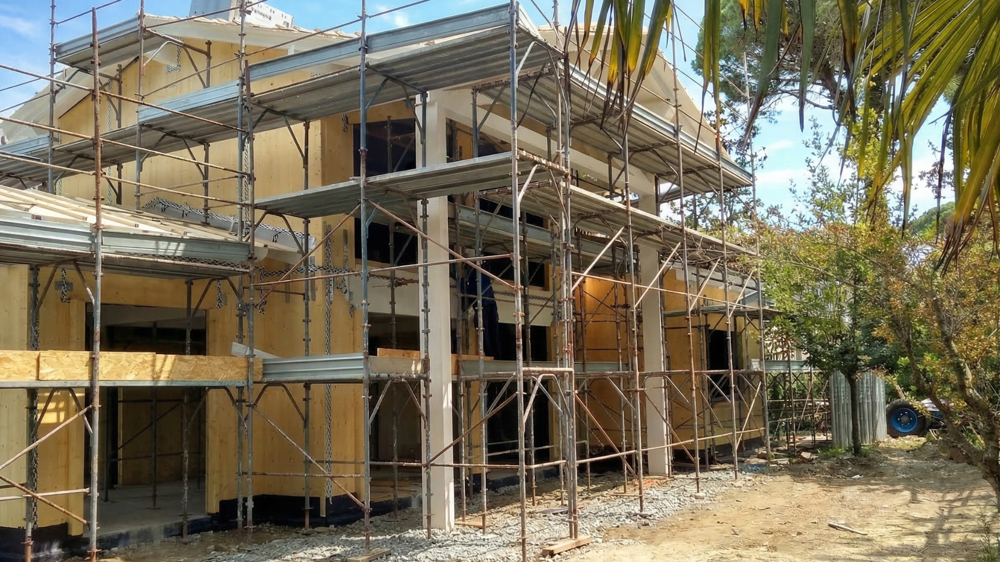
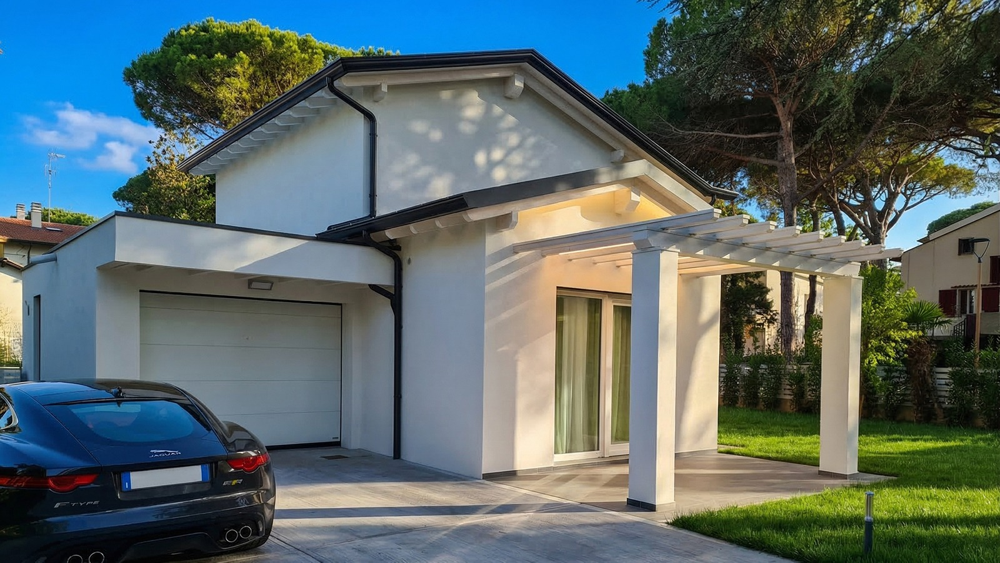
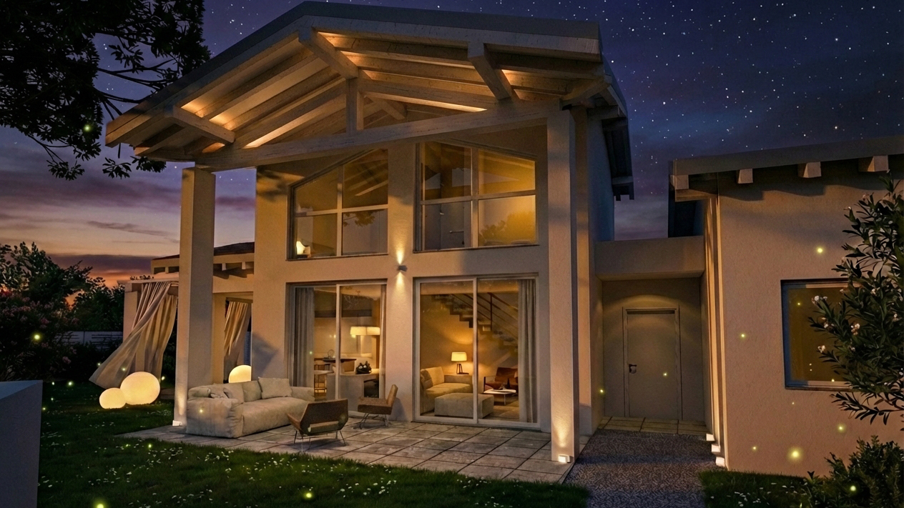

Una casa nuova nello stesso luogo, mantenendo ciò che di quel luogo valeva la pena conservare.
Villa S nasce dalla demolizione di una casa esistente, all’interno di un giardino già formato e caratterizzato dalla presenza di alberi adulti.
Il progetto non parte quindi da un terreno vuoto. Parte da un luogo che aveva già una propria storia.
La casa esistente apparteneva a un’altra epoca e rispondeva a un altro modo di abitare. Conservarla avrebbe significato accettarne limiti distributivi, costruttivi ed energetici difficili da conciliare con ciò che la nuova casa avrebbe dovuto essere.
Abbiamo scelto di conservare il luogo, non necessariamente l’edificio.
La demolizione è diventata così il punto di partenza per ripensare completamente la casa, mantenendo però il rapporto con il giardino e con gli alberi che nel tempo ne avevano costruito il carattere.


Quando si costruisce su un lotto libero, casa e giardino iniziano insieme.
Qui è accaduto il contrario.
La nuova architettura ha dovuto trovare il proprio posto tra presenze già importanti. I grandi alberi non sono rimasti semplicemente intorno alla casa: sono diventati parte del progetto, determinando visuali, ombre, aperture e spazi esterni.
La casa è nuova, ma non sembra arrivata prima del luogo.
Il soggiorno si apre verso il giardino attraverso una grande superficie vetrata a doppia altezza.
Il portico ne prolunga lo spazio verso l’esterno e, insieme alla struttura della copertura, costruisce una zona intermedia tra casa e giardino.
Non un semplice affaccio, quindi, ma un rapporto continuo tra gli ambienti interni, gli spazi coperti e il verde.


Intorno alla casa non abbiamo immaginato un unico spazio esterno indistinto.
Il portico principale, la pergola della zona pranzo e le parti più raccolte del giardino corrispondono a modi diversi di vivere all’aperto durante la giornata e nelle diverse stagioni.
L’architettura costruisce questi luoghi senza separarli dal giardino.
Dietro un’immagine volutamente semplice c’è una costruzione contemporanea in legno prefabbricato.
Durante il montaggio, prima che rivestimenti e finiture la rendessero invisibile, la struttura mostrava con chiarezza la logica con cui la casa era stata costruita.
È una parte dell’architettura che alla fine non si vede più, ma continua a determinarne prestazioni, precisione e qualità costruttiva.


Il render raccontava una casa ancora inesistente, immersa tra gli alberi che avevamo deciso di conservare.
La fotografia racconta ciò che è accaduto dopo.
Non ci interessa che le due immagini siano identiche. Ci interessa riconoscere nella casa costruita le intenzioni che avevano guidato il progetto.
Il rapporto con il verde, il grande portico, la doppia altezza, la luce e il modo in cui gli spazi interni continuano all’esterno erano già lì.
Ricostruire senza cancellare.
Demolire non significa necessariamente perdere ciò che esisteva.
A volte permette di distinguere ciò che appartiene semplicemente a un edificio da ciò che appartiene davvero a un luogo.
Qui abbiamo costruito una casa nuova cercando di lasciare intatto proprio questo.

Informativa Privacy (Privacy Policy)
Per conoscere le modalità di trattamento dei dati personali e l'utilizzo dei cookie su questo sito, consulta l'Informativa sulla Privacy completa.